Вітальня · журнал «ДентАрт» 2022 №4
Стоматологиня і волонтерка Тетяна Бондар: «Усі мої пацієнти-біженці кажуть, що найкраща стоматологія — в Україні»
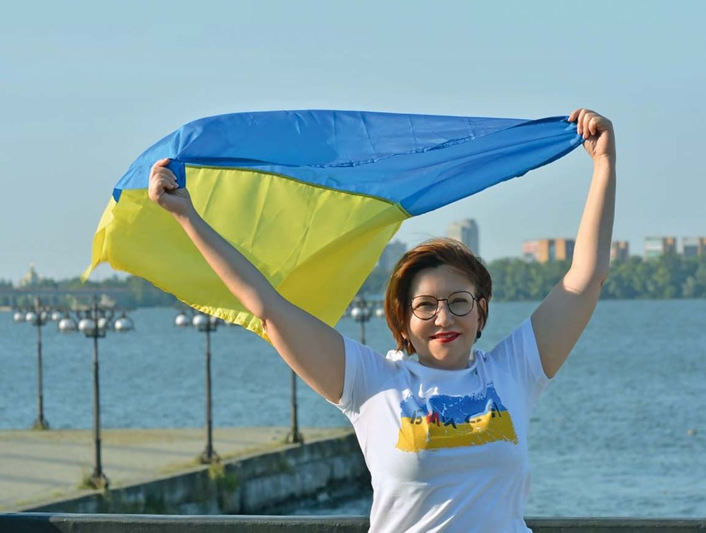
Сьогодні у Вітальні «ДентАрту» читачі мають нагоду зустрітися з Тетяною Бондар — лікаркою-стоматологом, членкинею Асоціації імплантологів України і волонтеркою з українського міста Дніпра, котра разом зі своїм чоловіком Ігорем демонструє зразки і сучасного, ефективного лікування та турботливого ставлення до пацієнтів, і жертовної, самовідданої волонтерської праці, яка допомагає нашим воїнам захищати Україну.
Сьогодні у Вітальні «ДентАрту» читачі мають нагоду зустрітися з Тетяною Бондар, лікарем-стоматологом, членкинею Асоціації імплантологів України і волонтеркою з українського міста Дніпра, котра разом зі своїм чоловіком Ігорем демонструє зразки і сучасного, ефективного лікування та турботливого ставлення до пацієнтів у своєму стоматологічному кабінеті, і жертовної, самовідданої волонтерської праці, яка допомагає нашим воїнам захищати Україну від рашистських окупантів і наближає омріяну Перемогу України.
«Вірю, що проєкт Азовського форуму стоматологів продовжиться»
— Пані Тетяно, ми з Вами познайомилися і поспілкувалися на Першому Азовському форумі стоматологів, що відбувався влітку 2021 року в Маріуполі. Які почуття залишило тоді у Вашому серці перебування в цьому місті, до якого ми сьогодні поки що не можемо приїхати?
— Мені дуже сподобалося це затишне містечко на березі моря. І дуже сподобався концерт, який для нас дали артисти Маріупольської камерної філармонії. Привернув увагу дуже талановитий диригент, директор цієї філармонії Василь Крячок. Я за нього потім дуже переживала. Читала, що Маріупольська камерна філармонія приймала багато людей під свій дах, двері були завжди відчинені, директор був там, і я боялася, щоб з ним нічого не сталося у тому пеклі, яке влаштували маріупольцям катюги-рашисти. Завдяки Василеві Михайловичу не лише вціліла філармонія, а й вижило близько 800 людей, серед яких багато дітей, зокрема і новонароджених, а також різні тварини.
Я підписана на сторінку відомої диригентки Оксани Линів, котра нині в Австрії, диригує в опері, сама вона львів'янка, засновниця і артдиректорка Міжнародного фестивалю класичної музики LvivMozArt (фестиваль названо на честь Франца Ксавера Моцарта, сина Вольфганга Амадея Моцарта. Франц Ксавер, відомий диригент, композитор, педагог, 30 років мешкав у Львові (1808–1838), заснував тут хорове Товариство святої Цецилії, значно вплинув на формування музичної атмосфери міста). І якось бачу, що Оксана запросила до себе в гості диригента Маріупольського муніципального камерного оркестру «Ренесанс», заслуженого діяча мистецтв України Василя Михайловича Крячка. І я була така рада, що цей талановитий митець живий! Нині для нас дуже важливо, щоб українці максимально вижили. Такі люди, як цей диригент, – то скарб для України.
А щодо Азовського форуму стоматологів, то ми планували розвивати цей проєкт і наступного 2022 року зустрітися вдруге, спілкуватися, милуватися Маріуполем і морем, але людиножерська рашистська деспотія все це, на жаль, зруйнувала. Але ми повернемо Маріуполь, відбудуємо, і я вірю, що проєкт Азовського форуму стоматологів продовжиться…
«Лікувала зубки своїм лялькам і ведмедикам»
— Повернімося до стоматології. Чому Ви стали стоматологом? І чи відчуваєте себе як стоматологиня щасливою?
— Дуже. Я рада, що обрала цю професію. З дитинства мріяла стати лікарем (у моєму роду були переважно лікарі і музиканти). Розмірковувала, лікарем якої спеціальності я буду. Вирішила стати стоматологом. І не шкодую про свій вибір…
— А як стоматологія знайшла Вас?
— У моєї мами була подруга-стоматологиня. Вона приходила до нас додому зі своєю портативною бормашинкою і лікувала зуби нам, трьом поколінням родини – бабусі, дідусеві, мамі, татові і мені, а ще молодшій маминій сестрі. Ото ми повечеряємо, а потім – лікувальні і профілактичні процедури нашої стоматологині-берегині. Побачивши, як мене захоплює її робота, бабуся пошила мені, малій, халатик, були у мене біла шапочка й інструментики, якими я лікувала зубки своїм лялькам і ведмедикам.
У мене, як я вже казала, в родині були музиканти і лікарі, зокрема дядько Володимир був стоматологом, а тітонька Зіна – гінекологом. Підростаючи, я розмірковувала, куди мені піти, а дядечко сказав: «Тетянко, ти будеш гарним стоматологом». Це зміцнило мене в моїх намірах.
До речі, та мамина подруга-стоматологиня була така гарна й добра, що коли вона і її колеги приїжджали в школу робити огляд і профілактичні чи лікувальні процедури (це були 1970-ті роки), а багато учнів ховалися хто куди, навіть по туалетах, то я спокійно йшла на огляд, у мене були гарні зуби, і лише утверджувалася на думці стати стоматологом.
— Ви просто не боялися, тому що тоді не пропонували вініри на здорові зуби…
— Ха-ха! Може, й так…
«Воїнів і внутрішньо переміщених осіб лікуємо за свій рахунок»
— Стоматологія постійно диверсифікується з розвитком технологій, розгалужується, формуються нові спеціальності, спеціалізації… На чому Ви спеціалізуєтесь у стоматології?
— Я терапевт, тобто у мене і гігієна, і ендодонтія, і реставрація. Найбільше мене приваблює реставрація.
— І на майбутнє Ви б теж хотіли працювати в напрямку реставрації?
— Так, прямої реставрації.
— Розкажіть про свою клініку, як працюєте в умовах блекауту?
— Ми з чоловіком і нашим другом-компаньйоном маємо приватний кабінет на два крісла. Працюємо у дві зміни. В умовах блекауту приймаємо пацієнтів, коли є світло. Графік його відключень зараз більш-менш витримується. Нині пацієнтів трішки менше, бо багато моїх пацієнтів, особливо жінок з дітьми, виїхали за кордон чи в інші міста України. У серпні багато з-за кордону повернулися, я їх полікувала, і вони знову поїхали, хто в Німеччину, хто куди, але з наміром знову повернутися в Україну, коли війна закінчиться. Останніми днями, слава Богу, світло вимикають дуже рідко, і ми можемо працювати більше. Зараз я буду йти на другу зміну.
— Якщо багато пацієнтів виїхали за кордон, то чи спілкуєтеся з ними? Доводиться давати поради? Чи звертаються вони там за стоматологічною допомогою? Що вони розповідають про це?
— Це велика окрема тема. Наші біженці намагаються не звертатися там за стоматологічною допомогою. Нещодавно на прийомі у мене була жінка, котра залишила діточок з мамою в Німеччині, а сама приїхала полікуватися у нас і пройти огляд у гінеколога. І всі мої пацієнти-біженці кажуть, що найкраща стоматологія – в Україні. Бо вони стикалися з тим, що ті зуби, які ми лікуємо, в інших країнах пропонували просто видалити. У нас в Україні мінімально інвазивний підхід набуває все більшого поширення, і пацієнти це цінують. Як тільки закінчиться ця жахлива війна, вони повернуться і прийдуть у наші стоматологічні клініки і кабінети.
У Дніпрі багато внутрішньо переміщених осіб, і вони теж звертаються до нас за стоматологічною допомогою. Але ми зазвичай лікуємо таких пацієнтів безкоштовно, бо розуміємо їх стан, фінансове становище. Вони або винаймають житло, або мешкають у притулках для біженців. Люди все втратили або залишили, і їм дуже важко.
— Безкоштовної стоматології не буває, якщо ви не маєте державного фінансування на лікування внутрішньо переміщених осіб, тоді за рахунок клініки це робите. Це ваше волонтерство, ваш внесок у Перемогу України…
— У мене може бути за зміну 4-5 пацієнтів, два мої, які платять, два-три – або військовики, або переселенці. Є люди, які намагаються заплатити хоча б 50 відсотків, ми цьому раді, дякуємо, але є такі, що я по них бачу, у якій скруті вони перебувають…
Пораненим бійцям дуже потрібна психологічна підтримка
— Коли я телефоную, зазвичай Ви перебуваєте в обласній клінічній лікарні, яку всі називають коротко «Мечникова»… Це волонтерська діяльність, стоматологічний прийом?
— Це один з напрямків моєї волонтерської діяльності ще з 2014 року. У квітні того року, коли почалося це жахливе московитське вторгнення, ми з чоловіком прийшли у військовий шпиталь, стали допомагати, зокрема з ремонтом, бо шпиталь був занедбаний, його приміщення навіть хотіли віддати російському банку – ціла історія, не хочеться про неї зараз і говорити. Слава Богу, змогли його забрати…
Коли волонтерів у шпиталі стало багато, то навесні 2015 року я перейшла туди, де була більша потреба, і ось відтоді майже кожен день ходжу в лікарню Мечникова. Були періоди затишшя у 2017–2018 роках, коли поранених чи хворих бійців привозили менше, але я все одно приходила. А 24 лютого 2022 року ми з дівчатами-волонтерками, навіть не телефонуючи одна одній, уже були зранку в лікарні Мечникова. І донині допомога наша потрібна.
— І що Ви там робите?
— Я не працюю там як стоматолог, працюю просто як волонтерка. Ми допомагаємо одягти наших бійців, бо їх привозять з передової у закривавленому одязі. Якщо він цілий, перемо, якщо порваний, вдягаємо новий. Ми годуємо поранених додатково, доглядаємо за ними. Дуже багато нейрохірургічних пацієнтів, які самі не можуть їсти, їм потрібно допомагати. Є лежачі пацієнти.
Щодо медикаментів, то лікарня забезпечує всім, але деяких ліків не вистачає, і ми даємо свої гроші на їх закупівлю. Також купуємо ковдри для евакуації, подушки, одягаємо поранених від нижньої білизни до верхнього одягу, щоб їх потім можна було перевезти у тилові шпиталі.
І також спілкуємося з бійцями, бо їм дуже потрібна психологічна підтримка. Діємо там, як психологи, хоча й не маємо цієї освіти, але вже за плечима досвід з 2014 року. Підтримуємо наших воїнів, допомагаємо з відновленням документів, бо деякі втрачені, розшукуємо родичів, щоб вони знали, що їхній батько, син, чоловік, брат живий і перебуває у лікарні.
Якось я опікувалася хлопцем з Івано-Франківська, що був у реанімації, кілька днів перебував у комі, потім вийшов з неї, був при тямі і здоровому глузді, але документи загубилися, і єдине, що він згадав, – що його сестра працює в Івано-Франківську в облгазі. Назвав прізвище, ім'я, по батькові сестри. Ми знайшли телефони цієї організації, я подзвонила у відділ кадрів, але там зі зрозумілих у воєнну пору причин не захотіли дати телефон сестри воїна. Тоді я попросила передати їй, що брат відносно здоровий, перебуває там-то й там-то. Через 10 хвилин сестра нашого підопічного зателефонувала, ми поспілкувалися, вона плакала і дуже дякувала. Налагоджений зв'язок із сестрою – це велика підтримка для нашого воїна. Лікарі і медперсонал не мають часу на такі пошуки, дуже велике навантаження на них, а ми допомагаємо і в такому напрямку.
— У Дніпрі нині розташований мобільний стоматологічний комплекс «ТриЗуб», який діє на волонтерських засадах і до масштабного вторгнення росії працював у Карлівці поблизу Авдіївки… А зараз Ви бачите його активність? Чи, може, Ви теж причетні до цього проєкту?
— Так, причетна. З 2015 року, коли Ігор Ященко почав цей проєкт розвивати, ми допомагали йому, надсилаючи інструменти. Я їздила в Карлівку з іншої причини, я не лікувала там зуби, ми з чоловіком лікували наших воїнів у себе в кабінеті, але були з Ігорем постійно на зв'язку, і він час від часу направляв до нас пацієнтів, яким не змогли допомогти там або не було лікарів відповідного профілю. Тепер цей мобільний стоматологічний комплекс переведений у безпечне місце в Дніпрі, і ми продовжуємо з ним співпрацювати.
Один із напрямків нашої допомоги фронту – ми брали на лікування дівчат і хлопців після полону. Я підтримую зв'язки з начмедом шпиталю, і коли дізналася, що їх привезуть сюди (тоді був великий обмін), то відразу ж вирішили з лікарями нашими дніпровськими максимально можливо допомогти. Підключилися також лікарі з Києва і Запоріжжя. Ми з чоловіком запрошували визволених з полону захисників і захисниць до себе в кабінет, лікували їм зуби, чоловік робив протезування, якщо було потрібне. І вони вже мали інший вигляд, оптимістичніший настрій. Ми гуляли з ними в парку, ходили пити каву… Тобто, окрім стоматологічної допомоги, намагалися дати їм психологічну підтримку, що не менш важливо.
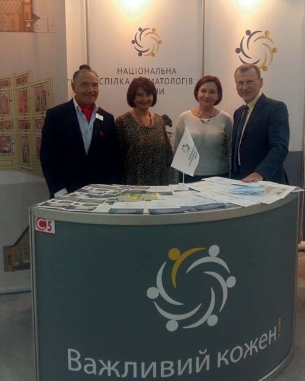
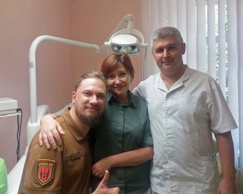
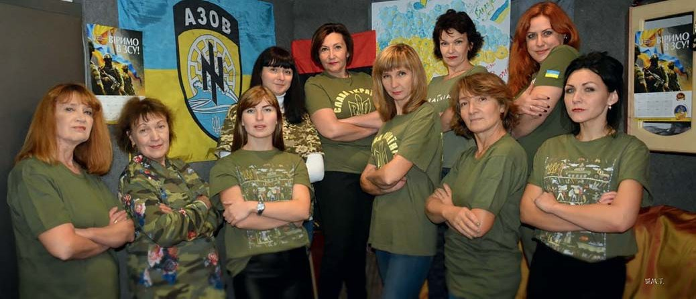
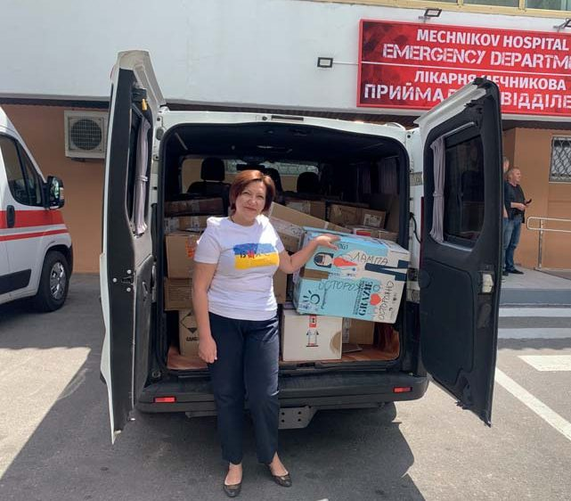
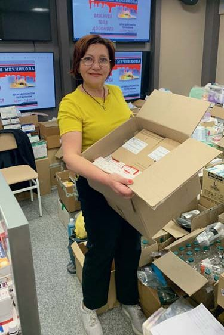
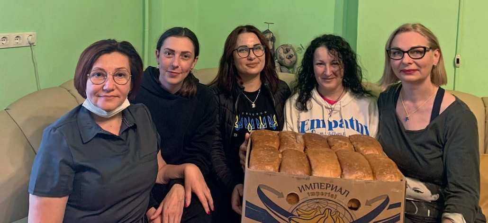
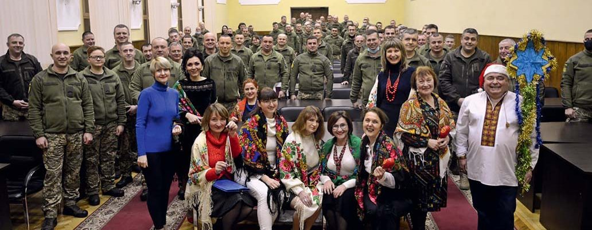
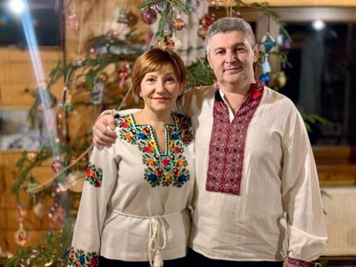
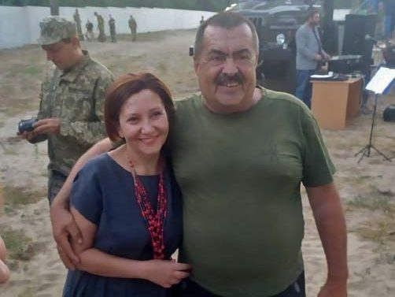
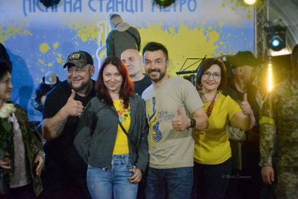
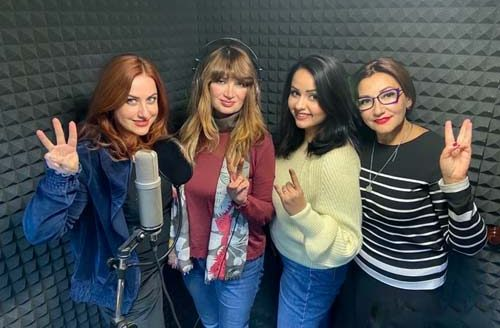
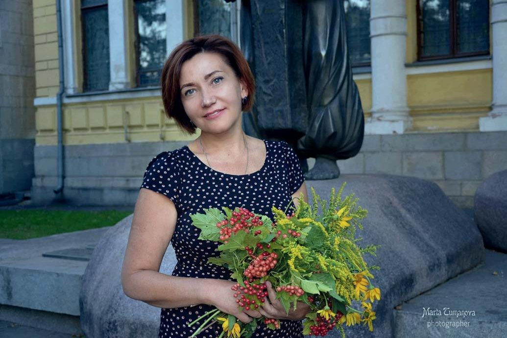
Приймаємо воїнів на реабілітацію і в гірському готелі в Карпатах
— Тетяно, Ви вже багато разів згадували свого чоловіка і, як я розумію, партнера. Розкажіть про нього докладніше.
— Ми разом з Ігорем працюємо, у нас спільний бізнес. От і зараз він на роботі. Він, як і я, закінчив медінститут у Дніпрі, один з найстаріших вищих навчальних закладів України (тепер Дніпровський державний медичний університет). Спеціалізується на терапії і ортопедії. Дуже допитливий, чіткий у роботі, що б не робив, прагне досконалості. У нашій професії це дуже важливо.
— А донька Ваша Анастасія не пішла в стоматологію?
— Ні, вона економіст. Це її вибір, вона у нас така дуже самостійна, але ми їй довіряємо. Відмінниця з першого класу і активістка, вона вирішила не закінчувати повністю загальноосвітню школу, а вступила в ліцей інформаційних технологій у Дніпрі. Потім закінчила Київський торгово-економічний університет, захистила дисертацію, кандидат філософських наук. Викладала в університеті, потім пішла в декрет, народився один синочок, другий… І ось ці хлоп'ята, яким 6 і 10 років, уже кажуть, що подумують про те, чи не продовжити їм справу дідуся-бабусі. Може, хтось з онуків і піде в стоматологію…
До речі, Анастасія керує ще одним напрямком нашої волонтерської діяльності. У Карпатах, у Львівській області, є гірський готель, де ми також з 2014 року приймаємо поранених воїнів. У нас були такі програми реабілітації, як катання на конях, майстерня, гончарня, кузня, столярня і т. д.
— Знаю, що ви наших захисників там і медом годуєте…
— О, не тільки медом! Реабілітаційна програма різноманітна. Наприклад, возимо наших хлопців і дівчат – фронтовиків до дітей у школу. І це спілкування з діточками їх і розслабляє, і надихає, окрилює. Вони дуже швидко налагоджують контакт з дітьми, охоче відповідають на їхні запитання, навіть ті, які вчителям можуть здатися незручними. І у наших фронтовиків загоряються очі, вони можуть дітям розповісти те, що не скажуть лікареві чи ще комусь…
Пісня – це також зброя
— На Фейсбуці я постійно зустрічаю новини від Вас, і часто вони пов'язані з виступами Першого Волонтерського хору міста Дніпра… Розкажіть про ваш колектив. Як пісня допомагає волонтерській діяльності?
— Я з дитинства люблю співати. Це для мене як віддушина. Коли я на репетиції або коли шукаю нову пісню для хору, забуваю про всі біди і тривоги. Моя мама мріяла, що я стану піаністкою, і готувала мене для цього, але я сказала: «Буду лікарем!» Батько підтримав мене і переконав маму, я вступила в медінститут, закінчила його, стала стоматологинею, але любов до пісні, музики теж залишилася зі мною.
В Україні є фестиваль «Пісні, народжені в АТО», він проводився до початку повномасштабного вторгнення, але і в травні 2022 року ми провели його в метро у місті Дніпрі. Тут звучать пісні, які наші воїни, захисники і захисниці, створили в окопах. У 2015 році фестиваль відбувався у нашому місті в парку Шевченка, у кінотеатрі, і потім один із засновників цього фестивалю Володимир Юрченко і Наталя Шуліка запропонували (у Фейсбуці написали): хто любить співати, створимо перший волонтерський хор і відкриємо його виступом наступний фестиваль, який буде проводитися у 2019 році. І ми зібралися, і з того часу виступаємо, поповнюємо свій репертуар піснями Української Волі. До повномасштабного вторгнення їздили на полігони, у Донецьку, Луганську області, щоб підтримати моральний дух наших захисників. Бо пісня – це також зброя. Кожен вносить свою часточку в нашу Перемогу, як може. І тому ми вважаємо, що це теж дуже важлива місія – приїжджати на фронт і піднімати дух наших воїнів. У хорі люди різних професій, фахових співаків немає. Основний критерій – волонтерство. Це єдиний волонтерський хор в Україні. А може, й у світі – треба це дослідити.
— А яку пісню Ви б назвали візитівкою вашого хору?
— Найперша пісня, з якою ми виступили, – «Зродились ми великої години». Її слова звучать сьогодні суперактуально:
Зродились ми великої години
З пожеж війни, із полум'я вогнів,
Плекав нас біль по втраті України,
Кормив нас гнів і злість на ворогів.
І ось ми йдем у бою життєвому –
Тверді, міцні, незламні, мов граніт,
Бо плач не дав свободи ще нікому,
А хто борець, той здобуває світ.
Цю пісню і можна назвати візитівкою нашого хору. Або «Червону калину». Ці й інші пісні нашого хору можна послухати в Інтернеті.
Усім нам треба навчитися повертати себе в стан мужнього спокою, віри в Перемогу, діяльної любові
— Чи маєте зараз вільний час, наприклад, коли відключили електрику? Що тоді робите?
— Коли відключається електропостачання, я приходжу додому, готую якісь страви на газі. Або просто запалюю свічки, лежу, дивлюся, як вони горять, і намагаюся релаксувати. Це дуже розслабляє. До мами їжджу – у нас із нею відключення електрики в різні години.
— Цікавий спосіб релаксації. Чи можете Ви рекомендувати споглядання свічок, що горять, як засіб уникнути вигорання?
— Так. Кажуть: можна безконечно дивитися на воду, вогонь і як працюють люди. Я теж люблю дивитися, як горять свічки, і потім ловлю себе на думці, що я ні про що не думала… Таким чином є захист, як Ви сказали, від вигорання. Це дуже важливо. Є такий термін – ПТСР, посттравматичний стресовий розлад, посттравматичний синдром, і безумовно, він є у військових, в різній формі. Я вивчала лекції американського психотерапевта, який лікував військовиків після В'єтнаму, тож багато що знаю про цей стан.
Сьогодні посттравматичний синдром, на жаль, присутній більшою чи меншою мірою у всіх громадян нашої країни, бо я не знаю родини, яку б не зачепила ця війна: у когось родич чи знайомий загинув або отримав поранення, хтось втратив дім, мусив виїхати з рідного окупованого рашистами краю, ще хтось останню копійку віддає, щоб допомогти родичам, які втратили роботу… Батьки, дружини, брати і сестри, діти живуть у щоденній тривозі за рідних, котрі боронять Україну і світ від диявола. Тож усім нам треба навчитися долати посттравматичний синдром, повертати себе в стан мужнього спокою, віри в Перемогу, діяльної любові до всього доброго і праведного у цьому світі.
— Тоді традиційне для дентартівської Вітальні побажання читачам журналу в ці важкі часи випробувань для нашого народу…
— Ясна річ, передусім бажаю всім нам Перемоги! Колегам зичу здоров'я…
— Включаючи психологічне…
— І стоматологічне… Наша українська стоматологія вже за багатьма показниками дуже гарна, може, одна з найкращих у світі. Бажаю колегам, щоб вони більше спілкувалися, розвивалися, щоб більше було різних форумів, де б ми навчалися один у одного. Коли ти сам щось вивчив, прочитав – це добре, але коли навчився нових технологій у свого колеги з більшим професійним досвідом – це ще краще. Доки триває війна, ми мало можемо їздити, але є вебінари, інші форми онлайн-спілкування. Скільки ти працюєш, скільки маєш навчатися.
А ще побажаю любити своїх пацієнтів. Бо без любові ніколи ніякої справи добре не зробиш. Між лікарем і пацієнтом має бути така якась ниточка взаєморозуміння, поваги, доброти, яка буде тримати відносини, і пацієнт довірятиме лікареві.
Дорогі колеги, своєю працею ви приносите людям дуже велику користь, даруючи здоров'я, гарні усмішки. Тож хай кожен ваш день біля крісла стоматолога буде сповненим натхнення, радості, творчості!
— Я радий повідомити читачам журналу «ДентАрт», що пані Тетяна Бондар – кандидатка на вступ до Міжнародної колегії стоматологів. Колегія має чотири основні напрямки у здійсненні своєї місії: реєструє досягнення, заслуги стоматолога перед професією, налагоджує комунікацію між стоматологами, здійснює просвітницькі заходи, і нарешті четверта функція – гуманітаризм. І мені здається, пані Тетяно, що в цьому інтерв'ю ми побачили відповідність Вашої професійної активності усім вимогам, що висуваються до членів Міжнародної колегії стоматологів, яка цьогоріч відзначатиме 103-ю річницю від свого створення. Ваша кандидатура вже затверджена, і залишається останній крок – пройти церемонію вступу, яка відбувається обов'язково з персональною присутністю. Так що сподіваємося, що в «ДентАрті» з'явиться репортаж, де Ви поділитеся своїми враженнями від щорічного зібрання Міжнародної колегії стоматологів в Амстердамі наприкінці червня і Вашого вступу в колегію.
Бажаю Вам успіхів! Вітання Ігореві!
— Дякую! Було дуже приємно поспілкуватися!
— Ідемо до Перемоги!
Розмовляв Сергій Радлінський. Фото з архіву родини Бондарів.